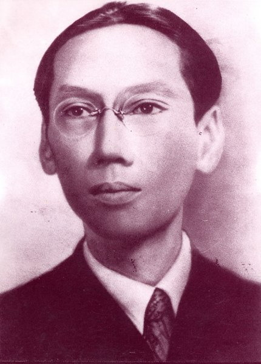

Pháp bắt buộc Nam Triều phải đem ra trình diện tất cả Hoàng Tử con của vị vua phế đế, để Pháp " chọn mặt gửi vàng ". Sau khi ăn mặc chỉnh tề, các Hoàng Tử được đưa ra trước " Hội Đồng Thuợng Đỉnh". Nhưng khi kiểm điểm lại thì thiếu Hoàng tử Vỉnh San lên tám tuổi. Pháp thuộc phải tìm cho ra mới nghe. Thôi thì tất cả thị vệ và cung nữ đang phục dịch trong cung cấm được huy động đi tìm kiếm; một sự náo loạn xảy ra trong cung điện, tưởng chừng như có biến cố trọng đại gì.
Đợi đã lâu mà chưa thấy Nam triều đưa Hoàng tử Vỉnh San ra trình diện, viên Toàn Quyền Pháp tỏ vẻ giận dữ, toan đứng dậy bỏ ra về thì một thị vệ dẫn Hoàng Tử đến, mặt mũi lem luốc, áo quần dính đấy mạng nhện. Đình thần bèn giải thích cho viên Toàn Quyền hay rằng:
- Vì quá sợ bị chọn làm Hoàng Đế, Hoàng Tử đã trốn chui, trốn nhủi, nên mới ra nông nổi. Để trình diện kịp thời, Hoàng Tử không kịp đi tắm rửa và thay quần áo.
Mục đích của Pháp là đưa lên ngôi một ông vua đần độn, không có tinh thần chống Pháp, để sai khiến về sau này; càng nhỏ tuổi càng tốt, để dể bề uốn nắn. Cho nên khi viên Toàn Quyền thấy Hoàng Tử Vỉnh san đang còn nhỏ và quá nhát gan như đình thần đã cho biết, thì tỏ vẻ mãn nguyện lắm.
Thực ra, lý do Hoàng Tử vắng mặt lúc này không phải vì sợ, mà ham chui xuống các bộ rầm hạ trong cung điện để bắt dế.
Ít hôm sau đó, trong buổi lễ đăng quang, có mặt viên Toàn Quyền và đoàn tùy tùng hôm nọ, Hoàng Tử tỏ ta chững chạc như người lớn, đối đáp với vị Đại Diện Pháp rất lưu loát, tỏ ra thông minh lạ thường, đôi khi còn nói những câu trịch thượng và xóc óc, khiến cho viên Toàn Quyền Pháp chưng hửng. Nhưng việc đã trót lỡ mất rồi, dù có thay đổi cũng không được nữa.
Chín năm sau, hẵn viên Toàn Quyền này còn hối tiếc nhiều hơn nữa khi Hoàng Tử ấy, trên ngôi vị Hoàng Đế, đã cầm đầu một cuộc khởi nghĩa chống Pháp vào đêm 2, rạng ngày 3 tháng 5 năm 1916.
( Theo Hoàng Trọng Thược )

Di Ảnh vua Duy Tân 30 tuổi